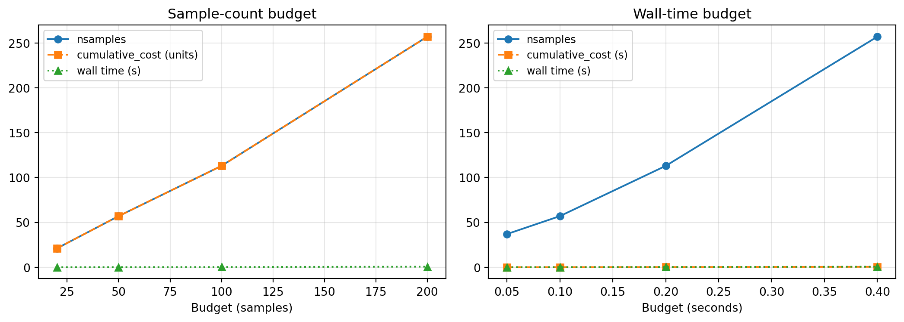

import time
import numpy as np
import matplotlib.pyplot as plt
from pyapprox.util.backends.numpy import NumpyBkd
from pyapprox.surrogates.sparsegrids import (
SingleFidelityAdaptiveSparseGridFitter,
TensorProductSubspaceFactory,
)
from pyapprox.surrogates.sparsegrids.basis_factory import PiecewiseFactory
from pyapprox.surrogates.sparsegrids.model_factory import (
DictModelFactory,
TimedModelFactory,
)
from pyapprox.surrogates.sparsegrids.cost_model import (
ConstantCostModel,
MeasuredCostModel,
)
from pyapprox.surrogates.affine.indices import (
ClenshawCurtisGrowthRule,
MaxLevelCriteria,
)
from pyapprox.probability.univariate.uniform import UniformMarginal
bkd = NumpyBkd()
marginal = UniformMarginal(-1.0, 1.0, bkd)Cost-Tracked Adaptive Sparse Grids
PyApprox Tutorial Library
Use measured wall-time as a budget for adaptive sparse grid refinement. Learn how to wire up TimedModelFactory and MeasuredCostModel to bound runs on expensive simulators.
TipDownload Notebook
Prerequisites
Complete Adaptive Sparse Grids and Local Basis Sparse Grids first. This tutorial shows how to bound adaptive refinement by measured computational cost rather than by a hand-picked sample or step count.
Why Track Cost?
The previous adaptive tutorials capped refinement using either max_steps or a sample-count budget — both are proxies for the quantity you actually care about on an expensive simulator: wall-clock time.
If each evaluation costs 10 seconds, setting max_cost = 500 samples gives ~80 minutes — fine if the simulator is reliable, but awkward if wall time varies across parameter settings (e.g., nonlinear solver iteration counts, mesh refinement, condition number). A better approach is to let the fitter record actual per-call wall time and stop when a cumulative-time budget is exhausted.
PyApprox provides three pieces that compose into this workflow:
| Component | Role |
|---|---|
DictModelFactory |
Wraps a single-fidelity target as a (config_idx -> model) map |
TimedModelFactory |
Wraps a model factory, timing each evaluation per config |
MeasuredCostModel |
Reports median per-sample wall time for each config |
The adaptive fitter’s cumulative_cost(cost_model) method then returns nsamples * median_per_sample_wall_time — a running estimate of total compute spent.
Setup
A Synthetic “Expensive” Simulator
We use a smooth test function wrapped in an artificial time.sleep so wall-time effects are measurable. In practice this would be a PDE solve or other costly evaluation.
COST_PER_SAMPLE_SECONDS = 0.002 # 2 ms per sample — cheap, but nonzero
def simulator(samples):
"""
Smooth target: cos(pi*z1) * cos(pi*z2/2).
Artificially sleeps to simulate an expensive per-sample cost.
"""
n = samples.shape[1]
time.sleep(COST_PER_SAMPLE_SECONDS * n)
z1, z2 = samples[0], samples[1]
return bkd.reshape(bkd.cos(np.pi * z1) * bkd.cos(np.pi * z2 / 2), (1, -1))Approach 1: Unit Cost (Sample Count Budget)
The default ConstantCostModel treats every sample as cost 1. Then fitter.cumulative_cost() equals nsamples, and budgeting by cost is equivalent to budgeting by evaluation count.
def run_with_sample_budget(max_samples):
"""Sample-count budget using the default unit cost model."""
facs = [PiecewiseFactory(marginal, bkd, poly_type="quadratic")
for _ in range(2)]
tp = TensorProductSubspaceFactory(bkd, facs, ClenshawCurtisGrowthRule())
adm = MaxLevelCriteria(max_level=15, pnorm=1.0, bkd=bkd)
fitter = SingleFidelityAdaptiveSparseGridFitter(bkd, tp, adm)
start = time.perf_counter()
while True:
new = fitter.step_samples()
if new is None:
break
fitter.step_values(simulator(new))
if fitter.cumulative_cost() >= max_samples:
break
wall = time.perf_counter() - start
return fitter.result().nsamples, fitter.cumulative_cost(), wall
nsamples, cost, wall = run_with_sample_budget(max_samples=100)
print(f"Sample budget run:")
print(f" nsamples = {nsamples}")
print(f" cumulative_cost = {cost:.2f} (unit cost -> equals nsamples)")
print(f" wall time = {wall:.3f} s")Sample budget run:
nsamples = 113
cumulative_cost = 113.00 (unit cost -> equals nsamples)
wall time = 0.536 sApproach 2: Wall-Time Budget (MeasuredCostModel)
To budget by wall time we need three changes:
- Wrap the target in a
DictModelFactorywith the single-fidelity key(). - Wrap that in a
TimedModelFactorythat records elapsed time on every call. - Build a
MeasuredCostModelthat reads median per-sample time from the timer.
Crucially, the target must be invoked through the timed wrapper (not called directly), otherwise the timer is never updated.
def run_with_walltime_budget(max_wall_seconds):
"""Wall-time budget using TimedModelFactory + MeasuredCostModel."""
# Wrap the target: single-fidelity uses the empty tuple as config key.
base_factory = DictModelFactory({(): simulator})
timed_factory = TimedModelFactory(base_factory)
cost_model = MeasuredCostModel(timed_factory)
# The timed closure: every call records wall time to the factory's timer.
timed_simulator = timed_factory.get_model(())
facs = [PiecewiseFactory(marginal, bkd, poly_type="quadratic")
for _ in range(2)]
tp = TensorProductSubspaceFactory(bkd, facs, ClenshawCurtisGrowthRule())
adm = MaxLevelCriteria(max_level=15, pnorm=1.0, bkd=bkd)
fitter = SingleFidelityAdaptiveSparseGridFitter(bkd, tp, adm)
start = time.perf_counter()
while True:
new = fitter.step_samples()
if new is None:
break
# Call through the timed wrapper so the timer updates.
fitter.step_values(timed_simulator(new))
# Pass cost_model at query time — cumulative_cost is now in seconds.
if fitter.cumulative_cost(cost_model) >= max_wall_seconds:
break
wall = time.perf_counter() - start
return (
fitter.result().nsamples,
fitter.cumulative_cost(cost_model),
wall,
)
nsamples, cost, wall = run_with_walltime_budget(max_wall_seconds=0.3)
print(f"Wall-time budget run (budget = 0.3s):")
print(f" nsamples = {nsamples}")
print(f" cumulative_cost = {cost:.4f} s (median-per-sample * nsamples)")
print(f" actual wall time = {wall:.3f} s")Wall-time budget run (budget = 0.3s):
nsamples = 177
cumulative_cost = 0.3561 s (median-per-sample * nsamples)
actual wall time = 0.430 s
Note
cumulative_cost uses the median per-sample time, not the integral of real wall time. On a stable simulator these are close; on a noisy one they can diverge. For tight budgets measure actual wall time directly in the loop as a backup check.
Why Median, Not Mean?
MeasuredCostModel calls FunctionTimer.get("__call__").median() rather than reporting the mean or total. Median is robust to outliers — a single slow call due to GC, cache miss, or solver retry does not inflate the estimated cost for future samples. This gives a realistic steady-state per-sample cost.
Comparing the Two Approaches
budgets_samples = [20, 50, 100, 200]
budgets_seconds = [0.05, 0.10, 0.20, 0.40]
res_sample = [run_with_sample_budget(b) for b in budgets_samples]
res_time = [run_with_walltime_budget(b) for b in budgets_seconds]
fig, axes = plt.subplots(1, 2, figsize=(11, 4))
# Panel 1: sample-budget results
ns_s = [r[0] for r in res_sample]
cost_s = [r[1] for r in res_sample]
wall_s = [r[2] for r in res_sample]
axes[0].plot(budgets_samples, ns_s, "o-", label="nsamples")
axes[0].plot(budgets_samples, cost_s, "s--", label="cumulative_cost (units)")
axes[0].plot(budgets_samples, wall_s, "^:", label="wall time (s)")
axes[0].set_xlabel("Budget (samples)")
axes[0].set_title("Sample-count budget")
axes[0].legend(fontsize=9)
axes[0].grid(True, alpha=0.3)
# Panel 2: wall-time budget results
ns_t = [r[0] for r in res_time]
cost_t = [r[1] for r in res_time]
wall_t = [r[2] for r in res_time]
axes[1].plot(budgets_seconds, ns_t, "o-", label="nsamples")
axes[1].plot(budgets_seconds, cost_t, "s--", label="cumulative_cost (s)")
axes[1].plot(budgets_seconds, wall_t, "^:", label="wall time (s)")
axes[1].set_xlabel("Budget (seconds)")
axes[1].set_title("Wall-time budget")
axes[1].legend(fontsize=9)
axes[1].grid(True, alpha=0.3)
fig.tight_layout()
plt.show()
The wall-time budget holds even when per-sample cost changes: if the simulator suddenly becomes twice as expensive (e.g., a nonlinear solver needs more iterations in some parameter region), the fitter spends fewer samples but stays within the time budget.
When to Use Each Approach
| Scenario | Budget type |
|---|---|
| Tutorial / synthetic benchmark | Sample count (ConstantCostModel) |
| Per-sample cost is stable and known | Either — sample count is simpler |
| Per-sample cost varies with parameters | Wall-time budget |
| Strict wall-clock deadline (e.g., overnight run) | Wall-time budget |
| Multi-fidelity with very different costs | Always wall-time (or set explicit per-config costs) |
Summary
ConstantCostModel(the default) assigns unit cost to every sample — budgeting bycumulative_cost()is then equivalent to budgeting by sample count.TimedModelFactory+MeasuredCostModelrecord real wall time per call and report median per-sample cost.- Pass
cost_modeltocumulative_cost(cost_model)at query time — the fitter does not need to be constructed with the cost model. - Always invoke the target through
timed_factory.get_model(())— calling the raw function bypasses the timer.
Exercises
Variable-cost simulator. Modify
simulatorso the sleep duration depends on \(z_1\) (e.g.,0.001 + 0.01 * |z_1|). Rerun both budget approaches at equivalent nominal cost. Which approach produces more stable error-vs-cost curves?Custom cost model. Write a
CostModelProtocolsubclass whose__call__(config_idx)returns a fixed cost (say 1.0 for single-fidelity) but logs every call. Use it to count how many timescumulative_costis queried during a run.Multi-fidelity extension. Wrap two simulators of different fidelity in a single
DictModelFactory({(0,): low_fid, (1,): high_fid})and useTimedModelFactoryto automatically pick up the cost ratio. TheMultiFidelityAdaptiveSparseGridFitterwill then balance low- and high-fidelity samples based on measured cost.